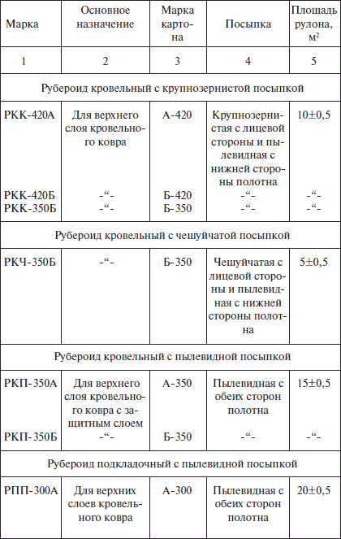
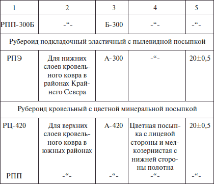

Рулонные материалы.
 Основные кровельные материалы
Основные кровельные материалы
К основанию рулонных материалов предъявляются весьма высокие требования. В качестве основания используются бумага, строительный картон, алюминиевая фольга, стеклоткань, кожа.
Строительный картон выпускается следующих видов: прокладочный, водонепроницаемый, строительно-кровельный и облицовочный.
Кровельный картон – это пористый волокнистый материал, состоящий из волокон вторичной переработки текстильного, синтетического и древесного сырья. Картон маркируется по величине массы в граммах, приходящейся на изготовление 1 м картона (А-500, А-420, А-350, А-300, Б-500, Б-420, Б-350, Б-300). Каждой марке соответствует своя разрывная сила: 226, 216, 186, 176, 226, 196, 186 Н. При устройстве мягкой кровли кровельный рулонный материал укладывается в 2 или 3 слоя, при этом нижний слой – подкладочный (беспокровный) материал, а верхний – из покровных материалов, с покровным слоем из тугоплавкого битума и присыпки.
Если присыпка применяется крупнозернистая, в марку вводят индекс К; мелкозернистая – М; пылевидная – П. Допускается также выпуск материала с чешуйчатой посыпкой, тогда вводится индекс Ч.
Пергамин – выпускается в соответствии с ГОСТ 2697-75. Это кровельный картон, пропитанный мягкими нефтяными битумами с температурой размягчения не ниже 40 °C. Он применяется в кровельных и гидроизоляционных покрытиях в качестве подкладочного материала для нижних слоев многослойных кровельных ковров при укладке на горячей мастике и под битумные фасонные листы или под асбестоцементные листы, а так же как основной рулонный материал в многослойных покрытиях при условии защиты верхнего слоя битумной мастикой в втопленным с него гравием для защиты поверхности.
Выпускают пергамин в рулонах площадью 1020 м , шириной 1000, 1025 и 1050 мм и массой 1 м для марок П-300 – 300 гр., П-350 – 350 гр.
Требование
Требования к пергамину – он должен быть гибким, иметь водопоглащение не превышающее 20 % по массе, его поверхность не должна иметь бугров, впадин, трещин, дыр, складок, разрывов, свободно скатываться в рулоны и не слипаться при температуре 5 °C.
Рубероид выпускается в соответствии с ГОСТ 10923-82. Это кровельный картон, пропитанный битумом и покрытый с обеих сторон тугоплавкими битумами с наполнителем и посыпкой.
Крупнозернистая цветная посыпка повышает атмосферостойкость рубероида и придает ему привлекательный вид. На нижнюю поверхность рубероида, образующего верхний слой кровельного ковра, и на обе стороны подкладочного рубероида наносится мелкозернистая или пылевидная посыпка, предотвращающая слипание материалов в рулонах. Рубероид подвержен гниению (это его большой недостаток), поэтому освоено произодство антисептированного рубероида.
В зависимости от назначения – кровельный или подкладочный – в обозначение марки вносятся индексы соответственно К и П. Вид посыпки – крупный, чешуйчатый или пылевидный в марке обозначаются индексом соответственно К, Ч и П. Масса 1 м основы картона выражена в марке рубероида цифрами ( табл. 3).
Таблица 3. Рубероид для устройства кровли

Кровельный рубероид РЦ-420 с цветной минеральной посыпкой значительно эффективней РКК-420, т. к. его посыпка не только улучшает внешний вид, но и в несколько раз уменьшает поглощение покрытием солнечных лучей, ускоряющих старение рубероида. Так красная присыпка отражает до 15 % лучей, а зеленая – до 20 %, а серебристая – до 40 %. С изнаночной стороны кровельный рубероид посыпают мелкозернистой посыпкой для предотвращения слипания его в рулоне в жаркое время года.
Рубероид с эластичным покровным слоем имеет прочность на разрыв полоски рубероида шириной 50 мм не менее 320 Н; водопроницаемость образца диаметром 100 мм (площадь 78,2 см ) при гидростатическом давлении до 0,07 МПа; водопоглощение при замачивании в воде в течение 24 часов – не более 25 г/м , температура размягчения пропиточной массы не ниже 40 °C и покровной массы 80–90 °C. С изнаночной стороны он имеет мелкозернистую посыпку для предотвращения слипания его в рулоне в жаркое время года.
Для регионов с холодным климатом применяют рубероид с эластичным слоем битума, модифицированного полимерами, что снижает температуру хрупкости покровного битума до -50 °C. Долговечность такого рубероида увеличивается в 1,5–2 раза.
К рубероиду, как кровельному материалу предъявляются следующие основные требования:
• рубероид должен быть теплостойким и водонепроницаемым. В зависимости от марок рубероид имеет следующие качественные показатели:
• отношение массы пропиточного битума к массе абсолютно сухого картона не менее (1,25-1,4):1;
• масса покровного состава 500-1000 г/м ;
• средняя величина разрывной нагрузки при растяжении рубероида в продольном и поперечном направлениях не менее 216–333 Н;
• отсутствие трещин и отслаивания посыпки при изгибании по полуокружности стержня диаметром 20–30 мм при 18–25 °C;
• рубероид с крупнозернистой посыпкой должен иметь с одного края поверхности вдоль полотна чистую непосыпанную кромку шириной не менее 70 и не более 100 мм.
Рубероид наплавляемый отличается от обычного тем, что в заводских условиях на нижнюю поверхность рулона наносится мастика, которая в присутствии растворителей обладает приклеивающими свойствами. Растворители (уайт-спирт или керосин) наносятся на основание по ровной, очищенной, сухой стяжке. Цементно-песчаная стяжка грунтуется раствором битума БН 90/10 в керосине или уайт-спирите в соотношении 1:2 по массе из расчета 800 г/м .
Внимание!
Главное преимущество наплавляемого рубероида состоит в том, что при устройстве кровли наклейка осуществляется без применения кровельной мастики. Для нижних слоев кровельного ковра используют марки РМ-350-1,0; РМ-420-1,0; РМ-500-2,0; для верхних слоев – марки РК-420-1,0 и РК-500-2,0. Выпускают наплавляемый рубероид в рулонах общей площадью 7,5-10,0 м с обычной шириной полотна.
Нельзя не отметить, что рубероид и пергамин вследствие высокой водопоглощающей способности картона набухают, а это способствует развитию гнилостных процессов. Поэтому для ответственных гидроизоляционных работ более пригодны битумные материалы, изготовленные на неорганической (асбестовой, металлической или стекловолокнистой) основе.
Гидроизол – беспокровный кровельный и гидроизоляционный материал (рулонный), основанием которого служит асбестовая бумага. Лучшей асбестовой бумагой для гидроизола является асбестоцеллюлозная, имеющая в своем составе до 20 % целлюлозы. Гидроизол выпускается двух марок: ГИ-Г – для гидроизоляции подземных сооружений и ГИ-К – для кровельных работ. Последний выпускают массой 1–1,5 кг/м , шириной полотна 950±5 мм, толщиной 1,5–2 мм и площадью в рулоне 20±0,4 м . При температуре до -5 °C рулон легко раскатывается без появления трещин.
Стеклорубероид – это рулонный кровельный и гидроизоляционный материал на стекловолокнистой основе. Получают его путем нанесения на стекловолокнистый холст марки ВВ-К битумного вяжущего с обеих сторон.
В зависимости от вида посыпки на лицевой поверхности стеклорубероид изготавливается трех марок: С-РК – кровельный с крупнозернистой посыпкой на лицевой поверхности и пылевидной или чешуйчатой на нижней; С-РЧ – кровельный с чешуйчатой посыпкой на лицевой поверхности и мелкой или пылевидной на нижней; С-РМ – гид ро изо ля ци онный, имеющий с двух сторон мелкую или пылевидную посыпку. Рубероид С-РК и С-РЧ применяется для устройства верхнего слоя кровельного ковра, а С-РМ – для оклеечной гидроизоляции нижних слоев и для кровельного ковра с защитным покровным слоем.
Стеклорубероид водонепроницаем, выдерживает в течение 10 минут гидростатическое давление в 0,08 МПа. Он гибок, при изгибании полоски стеклорубероида на стержне диаметром 40 мм при 0 °C на его поверхности не появляется трещин.
Фольгоизол – рулонный основной материал, состоящий из тонкой рифленой или гладкой фольги, покрытой с нижней стороны защитным битумно-резиновым антисептированным составом с мелким наполнителем или битумно-резинополимерным антисептированным с наполнителями. Этот материал делают из холоднотянутой алюминиевой фольги толщиной 0,08-0,3 мм и шириной 1000±5 мм, на которую наносят в горячем состоянии битумно-резиновый слой толщиной 0,84,0 мм. Наружная поверхность фольгоизола может быть гладкой, рифленой, окрашенной в различные цвета атмосферостойкими красками и лаками для увеличения коррозийной стойкости.
Фольгоизол имеет высокие физико-механические показатели, т. к. резина, входящая в состав гидроизоляционного слоя, медленнее стареет, пластична и влагостойка. Этот прочный водонепроницаемый материал долговечен и выпускается двух типов – кровельная фольга (ФК) и гидроизоляционная фольга (ФГ). В силу высокой отражательной способности фольги температура нагрева солнечными лучами кровли из этого материала на 20° ниже, чем температура нагрева аналогичных кровель черного цвета. Наклеивают фольгоизол на поверхность с помощью битумной мастики.
Совет
Во избежание слипания полотен при скатывании в рулон кровельного фольгоизола прокладывают полиэтиленовую пленку, а гидроизоляционного фольгоизола – целлофан или оберточную бумагу.
Кровли и гидроизоляционные покрытия с применением полимерных материалов имеют высокую степень индустриализации работ, надежны в эксплуатации и в ряде случаев имеют более низкую стоимость по сравнению со стоимостью традиционных материалов. Они не требуют почти никакого ухода при эксплуатации, достаточно долговечны и прочны.
Фольгорубероид является разновидностью рубероида, но вместо крупнозернистой посыпки применяется рифленая алюминиевая фольга. Высота гофра 0,4–1,0 мм, шаг 7-10 мм. Такое решение верхнего слоя кровельного покрытия способствует лучшему отражению солнечных лучей.
Фольгорубероид бывает двух марок – АР-420 и РА-420. АР-420 имеет повышенную гибкость, остается гибким при отрицательных температурах; РА-420 гибкость сохраняет только при положительных температурах. Выпускается он в рулонах общей площадью 10±0,5 м , шириной рулона 1026±5 мм. Применяется для устройства верхнего слоя кровельного покрытия в южных районах страны.
Фольгобитэп – рифленый основной кровельный материал, в котором основанием служит рифленая фольга, покрытая с одной или двух сторон слоем битумно-полимерного вяжущего, смешанного с минеральными наполнителями и антисептиками.
Из-за дефицита основания для изготовления рулонных кровельных материалов могут быть применены стеклоткани, обладающие большой гибкостью, гнилостойкостью и удобством укладки. К таким материалам относится гидростеклоизол кровельный и подкладочный. Стеклоткань в нем с обеих сторон покрывается слоем битумного вяжущего.
Гидростеклоизол кровельный предназначен для устройства плоских кровель общественных и промышленных зданий. Выпускается в рулонах шириной 850-1150 мм и длиной 10±0,25 м.
Гидростеклоизол подкладочный может быть использован для устройства нижнего слоя при устройстве кровель. Полотна подкладочного гидростеклоизола приклеиваются к основанию клеящими мастиками или оплавлением его поверхности, т. е. нагревом до капельно-жидкого состояния. Выпускается в рулонах шириной полотна 850-1000 мм, длиной 10±0,25 м. Для предотвращения склеивания гидростеклоизола в рулоне поверхность полотна покрывают каолиновой эмульсией.
Резиново-каучуковые композиции вяжущего состава гидроизоляционных материалов повышают их сопротивление действию воды и замедляют процесс старения. Материалом, предназначенным для устройства кровли и подкладочного гидроизоляционного слоя, явился армобитэн, где стеклоткань, стеклохолст или биостойкая штапельная стеклосетка пропитываются битумно-каучуковым вяжущим. Выпускают армобитэн с крупнозернистой и мелкозернистой посыпкой. Первый применяется для устройства верхнего слоя кровельного покрытия, второй – для устройства нижнего слоя или гидроизоляции. Рулоны армобитэна имеют ширину 1000±20 мм и общую площадь 5-10 м . Материал имеет высокую теплостойкость – не ниже 75 °C, очень гибкий, морозостойкий, с незначительным водопоглощением.
Приклеивается армобитэн путем сплавления покровной массы с нижней стороны полотна горячим воздухом.
Гудрокамовые материалы изготовляют пропиткой и покрытием с обеих сторон кровельного картона шириной 650-1060 мм и площадью 10±0,5 м гудрокамом – продуктом совместного окисления каменноугольных масел и нефтяного гудрона. Применяют их для многослойных плоских и совмещенных кровель, оклеечной пароизоляции на холодных и горячих гудрокамовых и битумных мастиках.
Безосновные кровельные материалыБезосновные кровельные материалы имеют по сравнению с основными одно преимущество: они воспринимают деформации конструкции основания, которое изолируют, без нарушения целостности изоляции. К безосновным кровельным материалам относятся изол, бризол, гидроизоляционный материал на основе полиизобутелена ГМП и др.
Изол – безосновный рулонный резинобитумный материал, в основу которого положено вяжущее, получаемое путем девулканизации утильной резины в битумной среде с последующей классификацией материала и введением волокнистых наполнителей в виде асбестовых волокон и других добавок.
Изол служит в два раза дольше рубероида, эластичен, гнилостоек, хорошо выдерживает деформации, водонепроницаем, пластичен и биостоек. Эти свойства изол сохраняет в диапазоне температур от -30 °C до +100 °C. Используется для гидроизоляции и покрытия кровель и приклеивается горячей изольной мастикой или горячей битумной мастикой.
Выпускают изол в рулонах площадью 10 и 15 м и шириной 800-1000 мм при толщине 2 мм. Масса 1 м изола 1,0–1,5 кг. Изготавливают изол двух марок И-БД – изол без полимерных добавок; И-ПД – изол с полимерными добавками.
Бризол – это рулонный материал, обладающий повышенной гнило– и водостойкостью, высокой атмосферостойкостью, водонепроницаемостью и эластичностью.
Изготавливают бризол из смеси нефтебитумов различной вязкости, измельченной резины от изношенных автомобильных шин, наполнителя и пластификатора. Примерный состав бризола в %: битум – до 60 %, резина – до 30 %, пластификатор – от 2 до 5 %, асбест – до 12 %.
Бризол стоек к серной кислоте при концентрации до 40 %, к соляной кислоте при концентрации 20 % и температуре 60 °C. Выпускают его в рулонах, внутреннюю поверхность полотна припудривают тонкоизмельченным минеральным порошком во избежание слипания полотен при наматывании в рулон. Приклеивают бризол к изолируемой поверхности битумно-резиновой мастикой.
ГМП – гидроизоляционный материал на основе полиизобутилена – высококачественный и долговечный рулонный материал. Выпускается он трех видов: марки ГМП-8, ГМП-10 и ГМП-12. ГМП предназначен для оклеечной гидроизоляции и многослойных покрытий плоских кровель.
Пленочные кровельные рулонные материалы – это: пленка полиэтиленопековая гидроизоляционная, пленка полиэтиленовая, полиамидная, пленка полиамидная стабилизированная и др. Их преимущество в малой толщине, массе и высокой степени водонепроницаемости.
Полиэтиленопековая гидроизоляционная пленка – это кровельный и гидроизоляционный рулонный материал. Отличается хорошими гидроизоляционными и прочностными показателями, но теряет эти качества при прямом воздействии солнечных лучей, атмосферного влияния, под воздействием микроорганизмов и корней луговых трав.
Выпускается в рулонах общей площадью 10±0,5 м , шириной 1500–2000 мм и толщиной 0,1–1,0 мм. Может применяться при устройстве защищенных плоских и малоскатных кровель.
Пленка полиэтиленовая также применяется при устройстве кровель как морозостойкий и водонепроницаемый материал. Выпускается двух марок: А и Б толщиной 0,03-0,08 мм, 0,081-0,12 мм, 0,121-0,15 мм, 0,151-0,20 мм и длиной не менее 25 метров.
Полиамидная пленка ПК-4. Выпускается трех марок: А, Б и В, отличающихся размерами и свойствами. Применяется в качестве гидроизоляционного слоя.
Пленка полиамидная стабилизированная – рулонный прозрачный материал, применяемый в качестве светопрозрачной кровли для сельскохозяйственных помещений. Выпускается в рулонах шириной 12001300 мм, длиной не менее 25 метров и толщиной 0,05-0,09 мм.